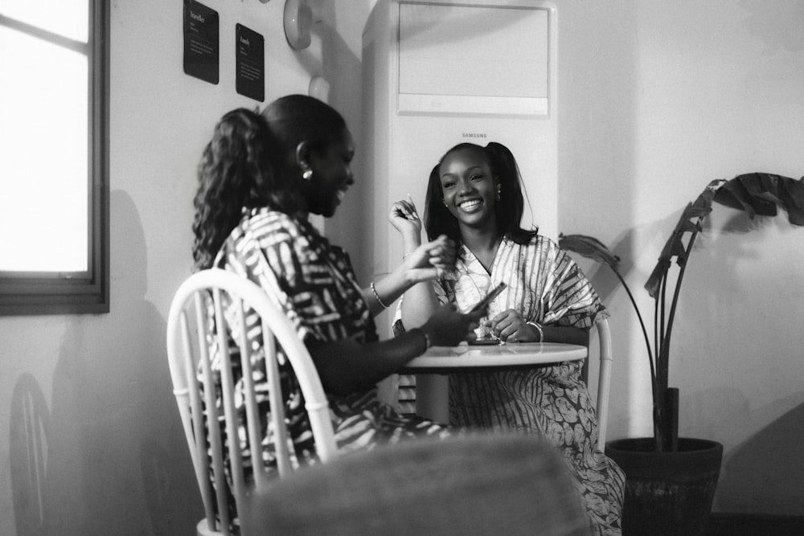
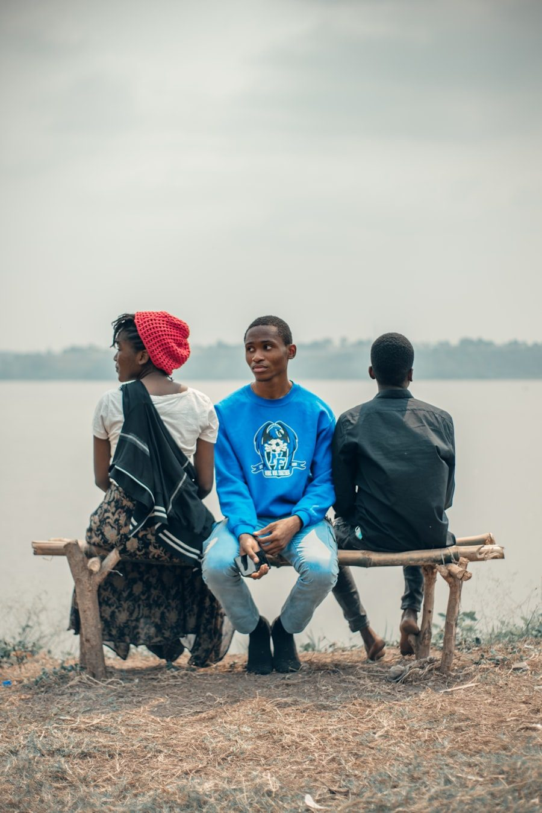
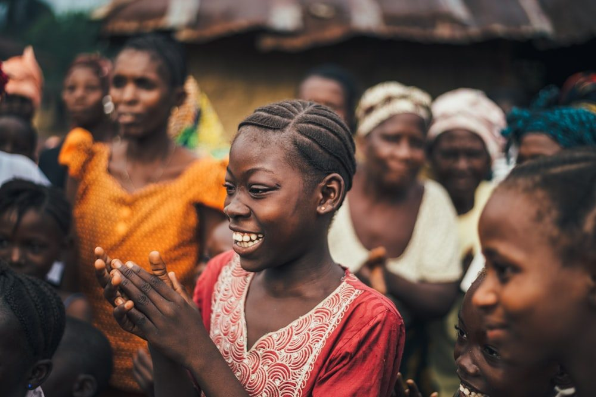

One hub. Two connected tracks.
A physical safe space combined with a simple digital system — USSD and WhatsApp — so that help reaches families before crisis, and reaches street youth where they are.

Family Mentorship Platform
For parents and youth still at home — intervening early, before the crisis becomes irreversible.
- 1Parents register via basic phone (USSD) or WhatsApp — no smartphone or data plan needed.
- 2They describe their child's problem, its severity, and what they have already tried.
- 3The platform matches them with a trained, Kinyarwanda-speaking community mentor.
- 4Mentorship happens face-to-face, by phone, or in small group sessions.
- 5Sliding-scale fee of 2,000–5,000 RWF/month; low-income families are fully subsidised.

Street Youth Rehabilitation
For young people without homes — a structured route back to safety, family, and dignity.
- 1Outreach team visits street youth weekly under bridges and in markets — building trust.
- 2Basic support offered first: food, hygiene supplies, and first aid.
- 3Willing youth are enrolled in structured mentorship at a community safe space.
- 4Programme covers life skills, psychosocial support, family reintegration, and vocational awareness.
- 5Youth who cannot reunify are connected to government shelters and NGO partners.
Powerful enough to match. Simple enough for any phone.
The platform is deliberately humble technology — because the goal is not an app, it is a relationship.
USSD First
Dial a short code from any handset — even without credit, internet, or a smartphone. Registration takes under three minutes.
WhatsApp Where It Fits
For families with smartphones, a guided WhatsApp flow handles registration, scheduling, and follow-ups.
Smart Matching
Each case is matched to a mentor by problem type, severity, location, language, and — where it matters — gender.
Safeguarding Built In
Mentors are vetted and trained; severe cases are escalated to professional and government services immediately.

A room where trust is rebuilt
Digital matching opens the door; the safe space is where change happens. One rented community room hosts mentorship circles, family mediation sessions, life-skills workshops, and quiet one-on-one conversations.
- Group mentorship circles for youth facing similar struggles
- Parent–child mediation guided by a trained mentor
- A first indoor refuge for street youth entering rehabilitation
Frequently asked questions
Who exactly has this problem?
Every Rwandan family with a child aged 12–25 is at risk — this affects both low-income and middle-income households. The most affected are youth facing addiction and peer pressure, girls and young women who are hidden victims of early pregnancy and family conflict, street children who have fallen through all safety nets, and parents who are desperate but have no help.
How do families deal with this today?
Their options are expensive professional counselling — unavailable to most and limited to urban areas — or simply nothing. Parents watch helplessly as their children drift away.
Why is Ongera Ubeho better and cheaper?
Community-based mentors cost families from 2,000 RWF/month versus 20,000+ RWF for professional counsellors. USSD access works on any phone, mentors speak Kinyarwanda, and low-income families are fully subsidised.
Are mentors a replacement for professional counsellors?
No — mentors handle guidance, connection, and early intervention. Cases involving clinical mental health needs, abuse, or acute risk are escalated to professional services and government structures immediately. The hub makes the referral pathway faster, not slower.
How are women and girls included?
At least 60% of youth beneficiaries will be young women and girls. Female mentors are recruited and trained, girls facing early pregnancy receive targeted support, and everything is available in Kinyarwanda so rural and low-literacy women are not excluded.
How will the project sustain itself after seed funding?
Three ways: sliding-scale fees from families who can afford to contribute, partnerships with MINISANTE and MIGEPROF for integration into national programmes, and a low-cost mentor-training model that any district can replicate.
Help us open the door for the first 130.
The model is designed, the team is trained, the community is waiting. What we build next depends on partners like you.
Write to us at ongeraubeho@gmail.com — Kigali, Rwanda